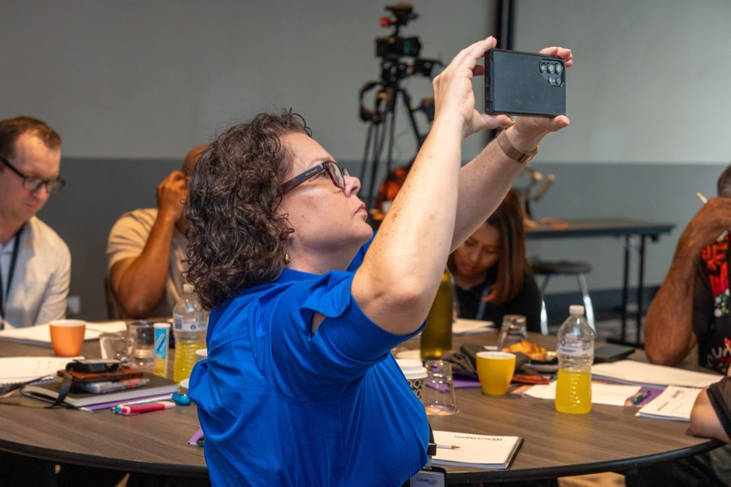
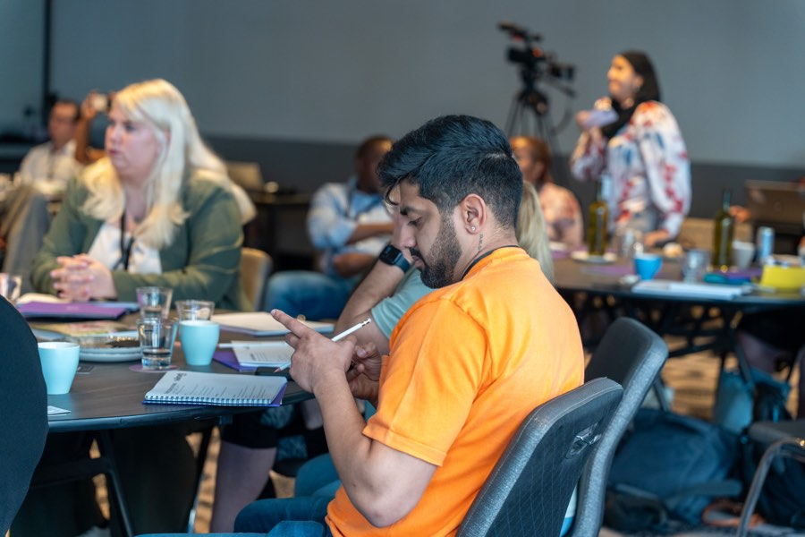

Social & Content
Real stories from your team that build trust before someone picks up the phone, and paid campaigns that reach families before they start searching.
They will look you up before they call
A family considering your provider will look at your social media before they call. A coordinator deciding between two referral options will check your online presence. What they find there decides whether they pick up the phone or keep scrolling.
This page covers both halves: the organic content that builds trust over time, and the paid campaigns that put you in front of people before they have started searching. They do different jobs, and they work better together.
Content that shows rather than tells
Your team is your best content
The strongest content an NDIS provider can publish is the real work, captured simply. A support worker and a participant at the park. A team member explaining what they love about their job. A photo from a real day, not a staged one.
I help you build a content calendar around your team and your participants, with consent. I coach your staff on how to capture genuine moments on a phone camera: what to look for, how to frame it, and how to get a usable photo or ten-second clip without turning it into a production.
The content you produce this way outperforms anything a marketing agency could produce from the outside. Because it is real, and people can tell.

Different platforms, different audiences
LinkedIn, Facebook and Instagram each serve a different audience for NDIS providers. Posting the same content to all three is common, and it underperforms on all three.
Facebook and Instagram are where families are. Content here should be participant-facing: stories, day-in-the-life posts, team introductions, and information about services and how to access them. The tone is warm, direct and personal.
LinkedIn is where coordinators, allied health professionals and referral partners are. Content here is business to business: sector insights, vacancy updates, team capability, and thought leadership from the founder. The tone is professional but still human.

Three posts a week for six months beats one viral post
Social media for NDIS providers is a trust-building channel. It works through consistency, not through chasing reach. A provider that posts three times a week, sharing real stories and useful information, builds more trust over six months than one that posts occasionally and hopes for a breakout moment.
I build a posting schedule your team can sustain: a realistic content calendar, a library of reusable content formats, and a process that does not require your founder to spend three hours a week writing captions.
Good content feeds the other channels
Content created for social media does not live only on social media. A well-written post about what SIL looks like in your service can become a page on your website that ranks in Google. A video introducing your team can sit on a landing page and improve conversion rates. A story shared on LinkedIn can reach a coordinator who later refers a family.
I plan content with these connections in mind. Every piece of content should do more than one job.
Organic reach has limits. Be realistic about them.
Organic social will not generate a flood of enquiries on its own. Reach is capped by the platforms, and a following that never enquires is not worth the effort it takes to build.
It works best alongside the other channels. It builds the trust that makes your ads land, keeps you visible to the coordinators who already know you, and gives a family something to look at while they decide whether to call. A supporting channel, and a strong one, but it is not a substitute for search visibility or for a real referral relationship.
If you want reach beyond the people already following you, that is a channel of its own with different mechanics and its own budget: NDIS Social Media Ads.
What providers ask about social media
How often should an NDIS provider post?
Three times a week is a good target for Facebook and Instagram. Two to three times a week on LinkedIn. The specific number matters less than consistency. Posting every day for a month and then going silent for six weeks does more harm than posting three times a week, every week.
Do I need to show participants in my content?
Participant content is the most powerful content a provider can share, but only with proper consent. I help you set up a simple consent process and work within whatever your compliance team requires. If participant content is not possible, staff stories, team introductions and behind-the-scenes content still outperform stock photos.
Do I need professional photos and video?
No, and a quarterly photoshoot is usually the wrong answer anyway. What sustains a content calendar is your team capturing ordinary moments on a phone as they happen. I show them what to look for and how to frame it, then handle the writing and scheduling.
Do I need to pay to reach anyone?
Organic posting reaches the people who already follow you: your staff, the families you support, and the coordinators who know you. That is worth building, and it is the audience that decides whether to call. Reaching beyond it takes budget, and that is a separate channel with its own mechanics: NDIS Social Media Ads.
Should I be on TikTok?
For NDIS providers, probably not yet. The audience is younger than most participant families and coordinators. Facebook, Instagram and LinkedIn cover the three audiences that matter: families, participants and referral partners. If that changes, I will recommend it.
Can my team manage social media themselves?
Yes, and for some providers that is the right approach. I offer a coaching model where I build the strategy, content calendar and templates, and your team handles the posting. I review and refine monthly. This works well for providers with an admin or marketing person who has time but needs direction.
Content is one channel. If you would rather have it planned alongside search, paid and the referral side, that is Managed Growth.
Find out what your content strategy should look like
The audit is free.